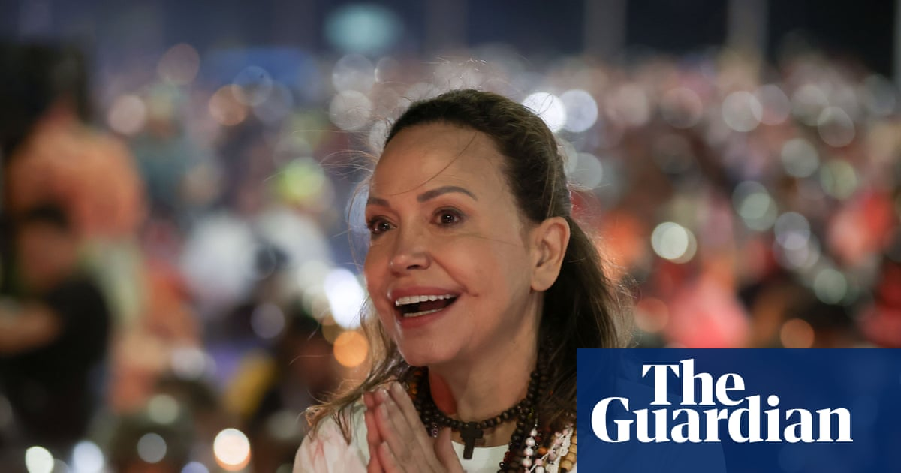

World · 26 Oct 2026
Exiled opposition leader María Corina Machado returns to rapturous reception in Venezuela

Nobel peace prize winner’s return after almost a year in exile is unlikely to please interim president Delcy Rodríguez The Venezuelan opposition leader, María Corina Machado, has announced she has returned to Venezuela almost a year after she left the country to receive the Nobel peace prize. “I’m h
Multiple independent publishers are reporting on the same development: Exiled opposition leader María Corina Machado returns to rapturous reception in Venezuela.
The available reports place the development in the World category. The accounts were compared for agreement on the central event rather than simply shared names or broad topics.
One of the available reports describes the development this way: Nobel peace prize winner’s return after almost a year in exile is unlikely to please interim president Delcy Rodríguez The Venezuelan opposition leader, María Corina Machado, has announced she has returned to Venezuela almost a year after she left the country to receive the Nobel peace prize. “I’m here. With you,” she wrote on X on Sunday lunchtime. Continue reading...
Readers should consult the linked source reports for additional context, updates and details that may change as the story develops.
Sources
This article was produced by the C. O. Eric AI Newsroom from the cited sources. It is published only after automated evidence and safety checks.